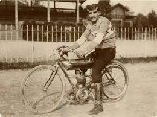
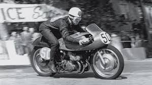
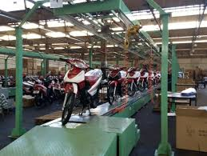
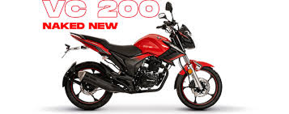

Historia de la marca Gilera
La marca Gilera fue fundada en 1909 en Arcore, Italia, por Giuseppe Gilera, un joven mecánico apasionado por los motores y la velocidad. Desde sus comienzos, Gilera se destacó por fabricar motocicletas potentes, elegantes y confiables, combinando la artesanía italiana con la innovación técnica.
La época dorada de Gilera llegó en los años 40 y 50, cuando sus motos dominaron las competencias internacionales. La Gilera 500 Rondine, una moto revolucionaria con motor de cuatro cilindros y sobrealimentador, fue una de las más avanzadas del mundo en su tiempo. Entre 1950 y 1957, Gilera ganó seis campeonatos mundiales de velocidad en la categoría de 500 cc, lo que consolidó su reputación como una marca de rendimiento y tecnología de punta. Durante esos años, se convirtió en símbolo del motociclismo italiano, junto a nombres como Moto Guzzi y MV Agusta. Sin embargo, a fines de los 50, la marca atravesó dificultades económicas y redujo su participación en las competencias, enfocándose más en la producción comercial.
En 1960, Gilera desembarcó oficialmente en Argentina, convirtiéndose en una de las primeras marcas de motos europeas con presencia local. Con el tiempo, la marca se ganó un lugar en el corazón de los argentinos por su resistencia, mecánica sencilla y precios accesibles.
En la actualidad, Gilera combina su herencia italiana con una visión moderna adaptada al mercado latinoamericano. Su enfoque está puesto en diseños más atractivos, mejoras en la eficiencia del motor y tecnología accesible para los usuarios. La marca busca posicionarse entre las preferidas de los jóvenes y trabajadores, ofreciendo motos que sean económicas, ágiles y fáciles de mantener. Además, continúa innovando con versiones actualizadas de sus modelos clásicos, incorporando iluminación LED, tableros digitales y motores más eficientes. Aunque ya no compite en los campeonatos mundiales como en su época dorada, Gilera mantiene vivo su espíritu deportivo, representando una mezcla perfecta entre historia, accesibilidad y tradición mecánica.